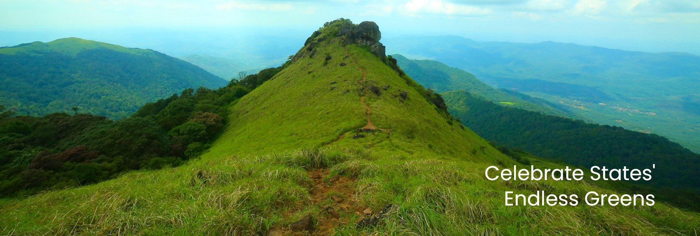

Kerala, located on the south-western tip of India, enjoys unique geographical features that have made it one of the most sought-after tourist destinations in Asia. Fondly referred to as ‘God’s Own Country’, Kerala was selected by the National Geographic Traveller as one of the 50 destinations of a lifetime and one of the thirteen paradises in the world.
An equable climate, serene beaches, tranquil stretches of backwaters, lush hill stations and exotic wildlife are the major attractions of this land. A unique advantage of Kerala is that most of the destinations here are only a two - four hour drive from the other.
Classical art forms, colourful festivals, exotic cuisine are some of the cultural marvels that await travellers. Ayurveda, the ancient Indian system of medicine and Panchakarma, the rejuvenation therapy in Ayurveda have also helped Kerala to gain a pan-global reputation as a worth-visit destination.
Season never ends in Kerala, thanks to the year-long moderate climate and numerous festivals and events!

The town's name translates into 'town of water', the river Kallada flows through the city of Punalur. This town is also known as the 'lap of the Western Ghats' because of its serene natural beauty. Punalur is pretty famous for its pineapples, plywood, pepper and timber.
Explore More
Nedumkayam is a rainforest and a part of the Nilgiri Bioreserve. It is mostly known for its dense forestation with several species of flora and fauna including some rare and endangered species and several mesmerising water bodies making it is a perfect attraction for nature lovers.
Explore More
Beypore is a cosy coastal town tucked away in the small but striking Kozhikode District. Located at the mouth of the energetic Chaliyar River, this town is covered in vibrant shades of green and surrounded by mystic shades of blue. When under the reign of Tipu Sultan, who was the ruler of Mysore, this town
Explore More
Seethargundu Viewpoint is a famous point in the region. It is located on a cliff and offers a stunning view of the surroundings making it a perfect attraction for nature lovers and photographers. The dense forests all around the point are home to monkeys and other wild animals which one can spot, if lucky.
Explore More
The Muzzhapilangad Drive-in Beach at Kannur is one referred to with many superlatives- as the longest drive-in beach in the whole of India, as one of the cleanest beaches of Kannur and most importantly, as one of the best drive-in beaches that the entire Asian continent has to offer! Being Kerala's only drive-in beach.
Explore More
One of the great delights of the Malabar Coast, the Marari Beach is an idyllic serene beach. About 11 km from the city of Alleppey, this beach is a hotspot for fishing activity, deriving its name from the local fishing village Mararikulam. Visiting in August gives tourists the exclusive opportunity to view Snake Boat races across the waters.
Explore MoreReferred to as the Venice of the East, Alappuzha has always enjoyed an important place in the maritime history of Kerala. Today, it is famous for its boat races, backwater holidays, beaches, marine products and coir industry. Alappuzha Beach is a popular picnic spot. The pier, which extends out to the sea here, is over 137 years old. Entertainment facilities at the Vijaya Beach Park add to the attraction of the beach.
Ernakulam refers to the eastern, mainland portion of the twin cities of Ernakulam-Kochi in central Kerala, India. Located on the coast of the Arabian Sea, Ernakulam is a booming business metropolis. It is often referred to as the commercial capital of Kerala. Ernakulam has been a part of human settlements since the Stone Age. Rock-cut caves and dolmens are still a part of this city.

Idukki, a landlocked district of Kerala, is one of the most nature-rich areas in Kerala with more than half of the area covered with forest. This rugged hill resort is known for its wildlife sanctuaries, beautiful bungalows, tea factories, rubber plantations and forests.Idukki's speciality lies in 650 feet long and 550 feet high arch dam across the Kuravan Kurathi mountain, which is the largest in the country.

Kannur is most renowned for the Theyyam performances in its temples. This magnificent art form plays an integral part in the culture of this Northern Kerala district. Formerly known as Cannanore, Marco Polo christened it a ‘Great Emporium Of Spice Trade’. Kannur has, since time immemorial, been hailed as an influential sea port. Legend has it that it had interactions and trade relations with the rest of the world since the time of King Solomon to the Greeks, Arabs and Romans.

The northernmost district of Kerala, Kasaragod is renowned for its hills, forts and water bodies. The coir and handloom industry here are extremely famous around the world. The place is also popular for its ancient temples and rich biodiversity. It is an important border district as well that regulates trade with a lot of neighbouring States. Legends regarding the district greet you at every turn on a visit here. A trip here is incomplete without visiting Bekal Fort, the most majestic and well maintained fort in South India.

From Ibn Batuta to Marco Polo, legendary explorers have talked about the prominence of Kollam district for centuries. Blessed with a long coastline, it is the de facto leader of the cashew trade and processing industry in India. It is historically remembered as being among the most important ports which were part of the legendary Spice Trade. Over a third of its surface is covered by the great Ashtamudi Lake, the entrance to the renowned backwaters of Kerala.